Zelené Brno — protože Brno má na víc

Dobré město nedělají velká gesta, ale péče o tisíc detailů.
Volte Zelené Brno ve volbách 9. a 10. října.
Natálie Vencovská
Lídryně kandidátky
Designérka, odbornice na veřejný prostor
Brno má skoro všechno, co dobré město potřebuje. Univerzity, kulturu, šaliny, přírodu na dosah. A pořád si drží lidské měřítko, díky kterému se tu dá žít sousedsky a normálně. Přesto asi všichni cítíme, že Brno má na víc.
V Brně stojí 1 592 městských bytů prázdných. Ulice patří spíš autům než dětem. A v létě je na nich nesnesitelné horko, protože chybí stromy a další zeleň. Radnice mezitím řeší arénu a lanovku.
Věci, do kterých se pustíme hned po volbách:
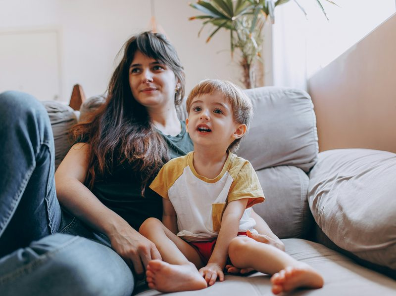
Aby bydlení nestálo půlku výplaty
Opravíme prázdné městské byty a co nejdřív je pronajmeme lidem. Postavíme nové a zařídíme, aby se výstavba nevlekla deset let jako ta družstevní. Místo dnešního chaosu bude jedna srozumitelná žádost o byt. A po developerech budeme chtít část bytů s dostupným nájmem, jako to má Vídeň.
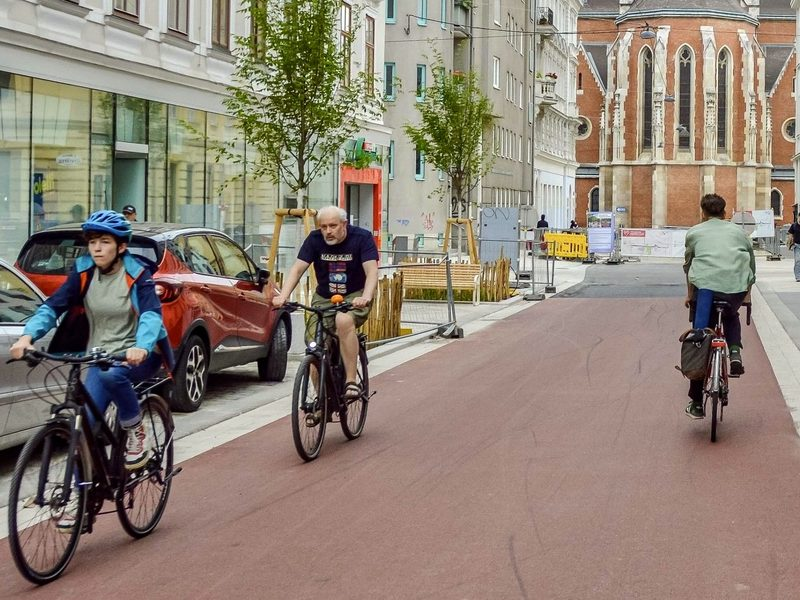
Aby na brněnských ulicích nikdo neumíral
Zabezpečíme cesty do škol, zklidníme provoz v obytných ulicích a postavíme cyklostezky, po kterých se dá jet i s dětmi. Přednost dostanou místa, kde lidé sami říkají, že se necítí bezpečně.
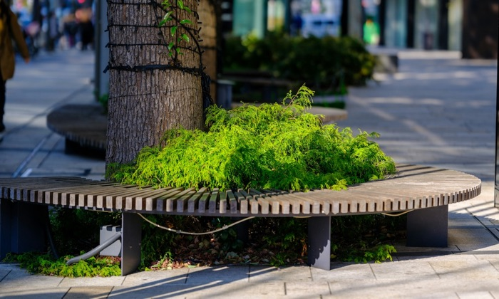
Aby se ve městě dalo žít i v létě
Vysadíme stromy do ulic, doplníme stín a vodní prvky a přestaneme kácet vzrostlé stromy jen proto, že pod zemí mají přednost kabely. A budeme je zalévat, protože bez toho výsadbu nepřežijí.
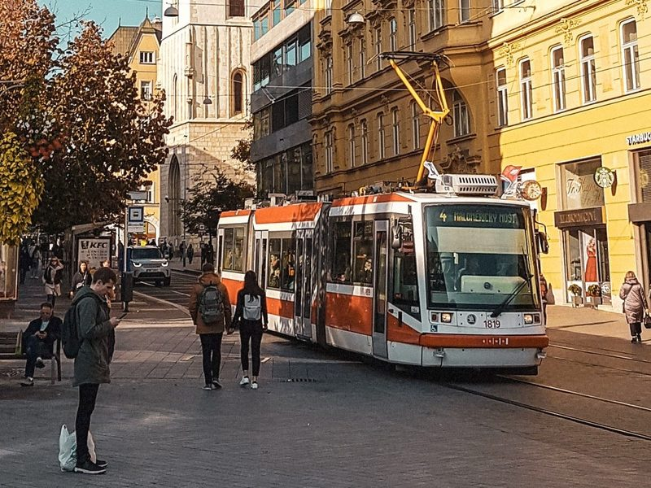
Aby šaliny zůstaly důvodem nejet autem
Zavedeme jízdné zdarma pro děti do 15 let, studenty a seniory nad 65 let, přidáme spoje i klimatizované vozy. V centru nebudeme tramvaje omezovat.
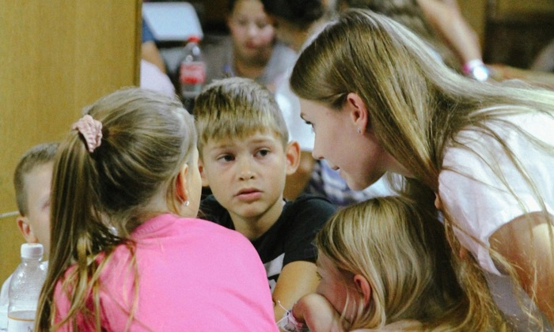
Aby děti měly dobrou školu i péči
Každá brněnská škola má být kvalitní, ať dítě bydlí kdekoli. Podpoříme školní psychology a speciální pedagogy, nabídneme prostory pro pediatry ve čtvrtích, kde chybí, a začneme řešit nedostatek míst na středních školách.
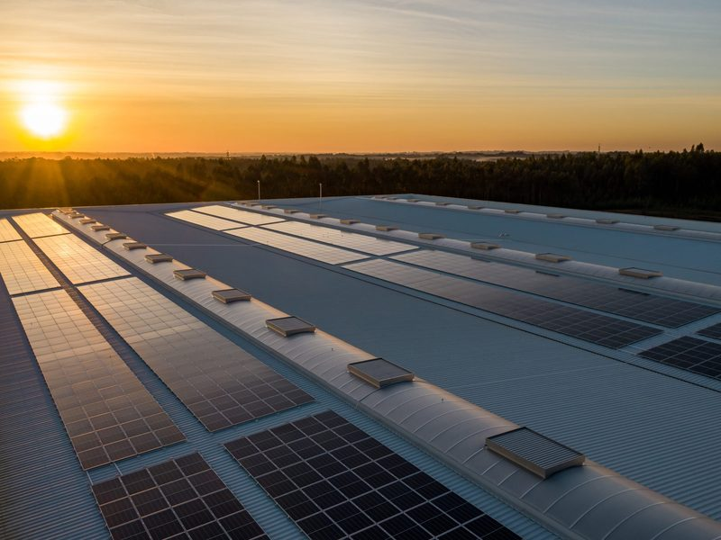
Abyste ušetřili za energie
Zateplíme městské domy, zastíníme je proti letnímu horku a dáme na střechy fotovoltaiku, ke které se přes komunitní energetiku dostanou i lidé v nájmu. SVJ a družstvům pomůžeme od posudku až po dotaci.
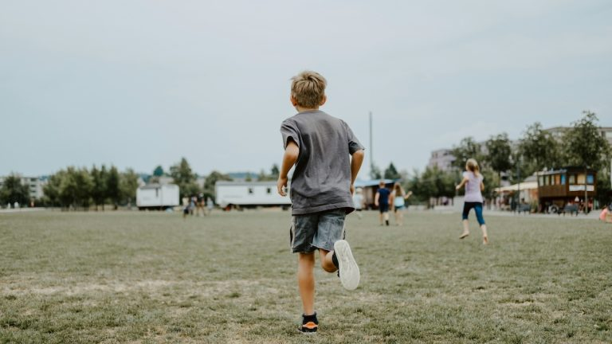
Aby rodiny zvládly devět týdnů prázdnin
Dovolená rodičů pokryje sotva polovinu léta, zbytek je logistický oříšek za nemalé peníze. Otevřeme družiny na celé léto a zavedeme dotované příměstské tábory za tisícovku týdně po vzoru Vídně.
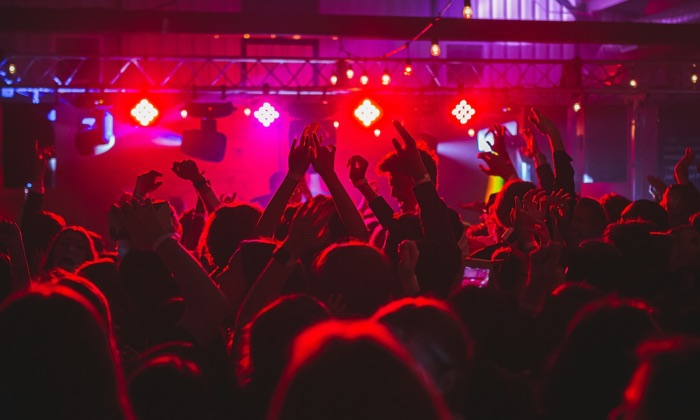
Aby svobodná kultura měla střechu nad hlavou
Brno má kulturní scénu, kterou mu jiná města závidí, jenže míst pro tvorbu ubývá, často bez náhrady. Zachováme a rozšíříme zkušebny na Kraví hoře a okolní prostory otevřeme komunitním aktivitám.
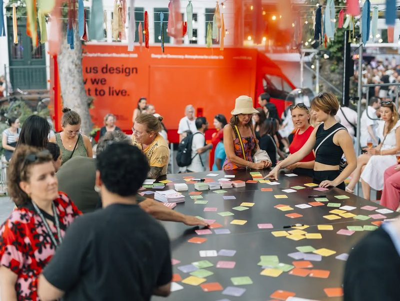
Aby se o Brně nerozhodovalo bez vás
O změnách ve městě se bude rozhodovat s lidmi, kterých se týkají, a ne až po dokončení. Zveřejníme všechny záměry a budeme je projednávat s lidmi. A každý rok ukážeme, jak plníme vlastní závazky, včetně toho, co se nepovedlo.
Chcete vědět víc?
Zeptejte se na program chatbota
Program má 256 konkrétních opatření. Chatbot vám pomůže najít odpověď na to, co vás zajímá.
Otevřít chatPoslechněte si program jako podcast
Nechce se vám program číst? Poslechněte si o něm podcast.
PoslechnoutPřečtěte si program
Kompletní program k procházení na webu i ke stažení jako PDF nebo eBook.
Přečíst programLidé, kteří v Brně už něco dokázali
Na kandidátce ZELENÉ BRNO se spojilo sedm subjektů a lidé, kteří v Brně už něco dokázali. Pět starostů a starostek, kteří vedou radnice svých čtvrtí, právnička z bytové komise, živnostníci, zástupci kultury i lidé z občanské společnosti.
-
 Jana Drápalová Nový Lískovec
Jana Drápalová Nový Lískovec -
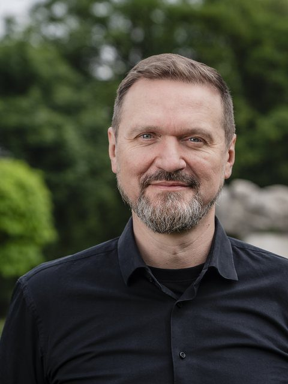
Petr Kunc Židenice -
Milada Blatná Komín
-
Ivana Fajnorová Jundrov
-
Ludmila Kutálková Maloměřice a Obřany
Koalici Zelené Brno tvoří


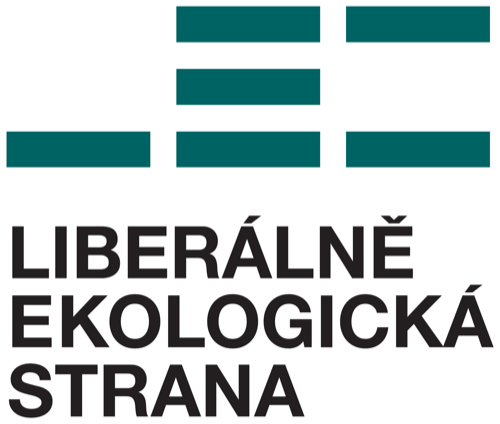
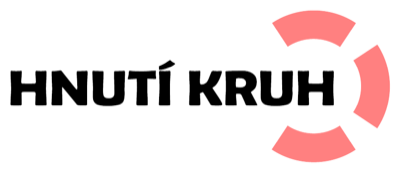

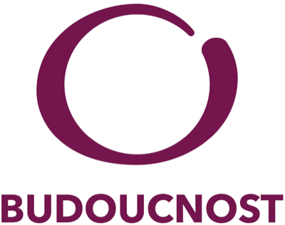
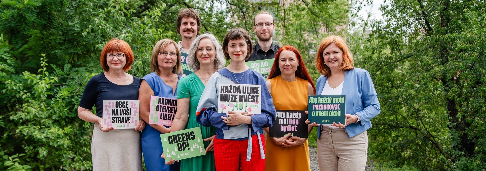
Milada Blatná, Jana Drápalová, Jiří Matějovský, Ivana Fajnorová, Natálie Vencovská, Matouš Vencálek, Kristýna Fuchsová, Jasna Flamiková
Tuhle kampaň táhnou lidé jako vy.
Kampaň stavíme na darech lidí, kterým jde o lepší Brno stejně jako nám. Každý váš dar znamená další leták do schránky, plakát ve čtvrti nebo setkání v ulici — něco, co náš program přiblíží dalším Brňanům a Brňankám.
Jednorázový nebo pravidelný dar na lepší Brno poslalo už 183 lidí.
Chcete pomoct i jinak než darem?
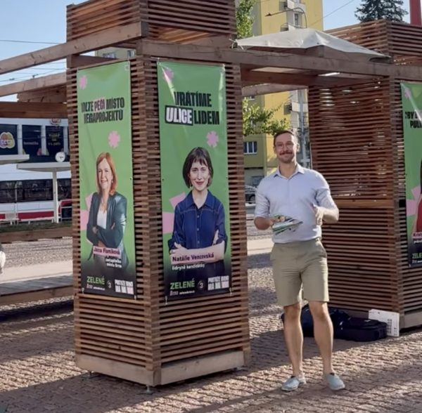
Hodí se nám hlavně vaše energie a čas — být v ulicích na našich stráncích, mluvit s lidmi, roznášet materiály nebo se přidat na happeningy.
Do kampaně se už přidalo přes 70 lidí.
Přijďte se potkat na naše procházky
Všechny procházkyJak se kradly byty
Historie i současnost bytové politiky na Brně-střed a cesta k transparentnímu bydlení.
dvůr radnice Brno-střed
K. Fuchsová, D. Oplatek
Projděme se Komínem
Komínské louky, molo u řeky i rekonstrukce Staré hasičky na komunitní centrum.
u Sokolovny (zast. Svratecká)
M. Blatná
Procházka Kamenkou
Stoletá dělnická kolonie v bývalém lomu a výzvy jejího dalšího rozvoje.
u Duck baru v Kamence
R. Horák
Nechejte na sebe kontakt
Chcete vědět o dalších procházkách a akcích brněnských Zelených?